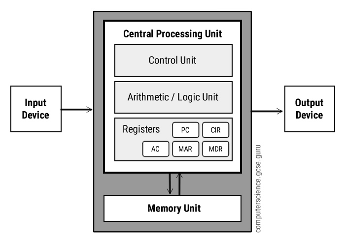
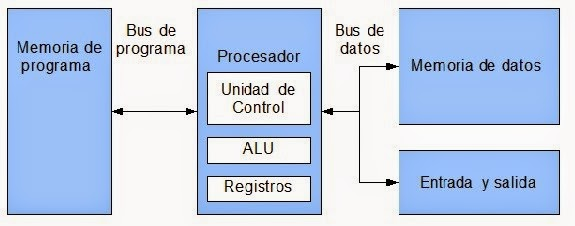
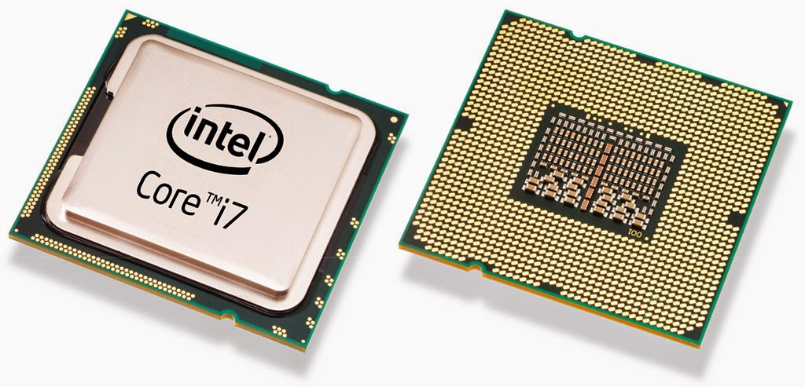

La arquitectura del microprocesador estudia la estructura interna y funcionamiento de los sistemas de procesamiento, permitiendo comprender cómo interactúan la CPU, memoria, buses y dispositivos periféricos.

Modelo de arquitectura donde programas y datos comparten la misma memoria principal.

Representa gráficamente la relación entre los componentes internos del microprocesador.

La organización externa corresponde a las terminales o pines utilizados para comunicación con otros dispositivos.
Almacena instrucciones y datos necesarios para el funcionamiento del sistema.
Dispositivos externos conectados al microprocesador para entrada y salida.
Circuito programable utilizado para controlar dispositivos de entrada y salida.
Controlador programable encargado de administrar interrupciones del sistema.
| Componente | Función |
|---|---|
| ALU | Realiza operaciones aritméticas y lógicas |
| Unidad de Control | Coordina las operaciones del sistema |
| Registros | Almacenan datos temporalmente |
| Buses | Transportan información entre componentes |